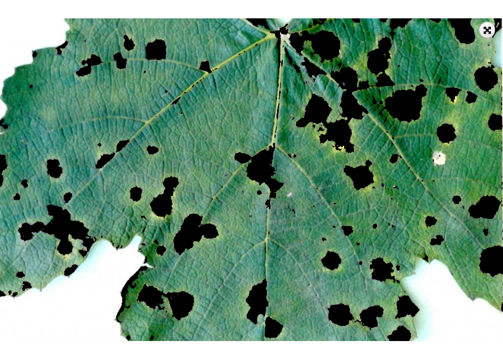
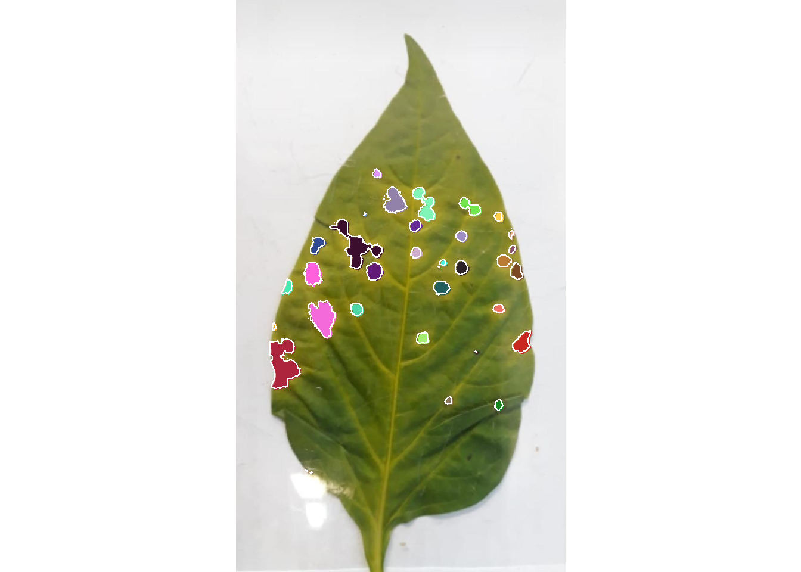
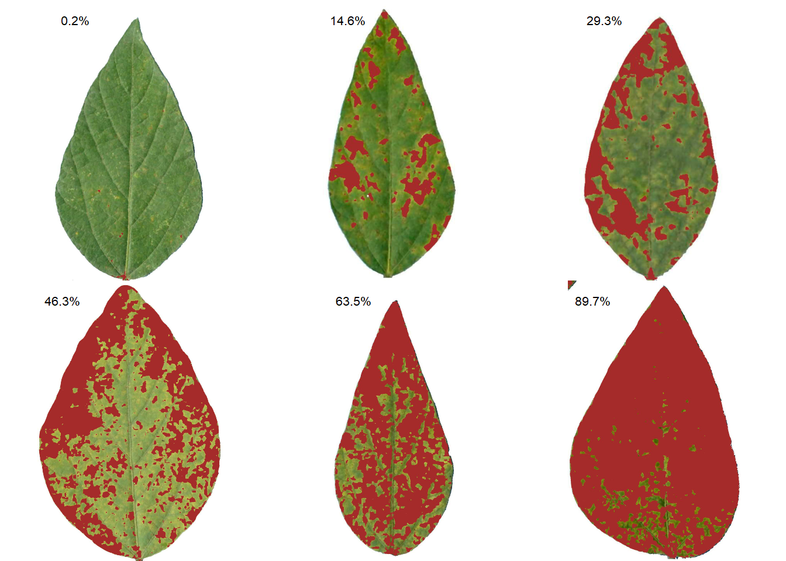
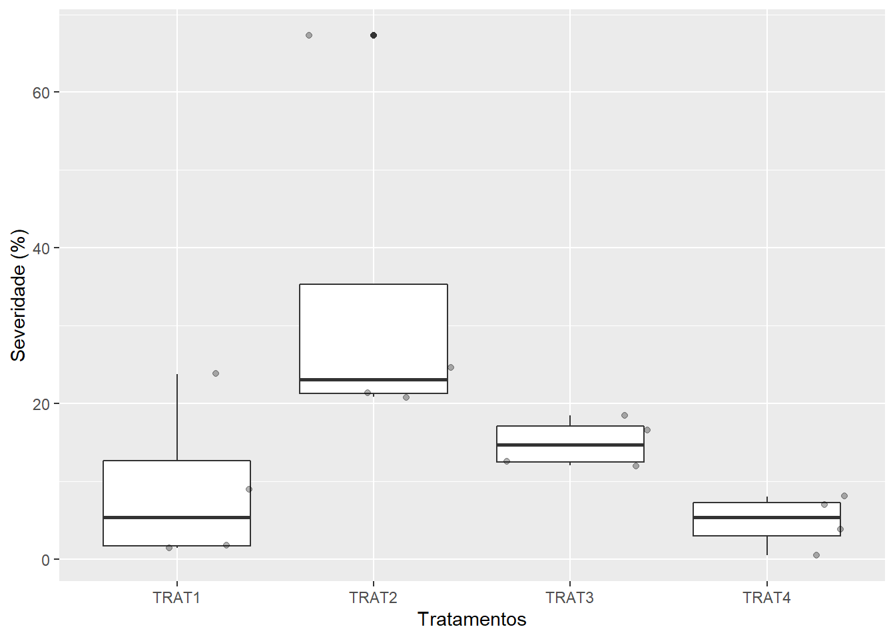
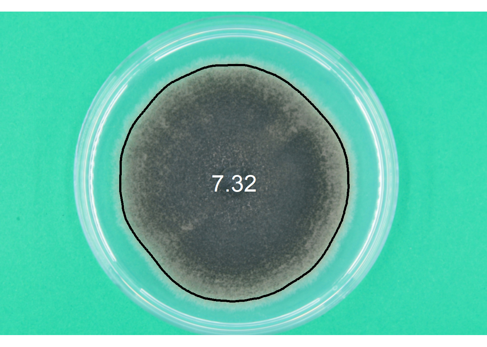

setwd("E:/Desktop/UFSC/cursos/pliman_tut/imgs")Phytopathometry
1 Directory
2 Disease severity
2.1 Using sample palettes
Sample palettes can be made by simply manually sampling small areas of representative images and producing a composite image that will represent each of the desired classes (background, healthy, and symptomatic tissues).
|==========================================================|| Tools for Plant Image Analysis (pliman 1.2.0) || Author: Tiago Olivoto || Type 'citation('pliman')' to know how to cite pliman || Type 'vignette('pliman_start')' for a short tutorial || Visit 'http://bit.ly/pkg_pliman' for a complete tutorial ||==========================================================|img <- image_import("exemp_1.jpeg", plot = TRUE)
h <- image_import("exem_h.png")
d <- image_import("exem_d.png")
b <- image_import("exem_b.png")
image_combine(img, h, d, b, ncol = 4)
2.2 Producing sample palettes
Users can produce these palettes with pick_palette() function.
h2 <- pick_palette(img)
d2 <- pick_palette(img)
b2 <- pick_palette(img)
image_combine(h2, d2, b2, ncol = 3)2.2.1 Defaults settings
sev <-
measure_disease(img = img,
img_healthy = h,
img_symptoms = d,
img_background = b)sev$severity healthy symptomatic
1 92.8022 7.19782.2.2 Filling lesions
sev <-
measure_disease(img = img,
img_healthy = h,
img_symptoms = d,
img_background = b,
show_contour = FALSE)2.2.3 Showing a mask
sev <-
measure_disease(img = img,
img_healthy = h,
img_symptoms = d,
img_background = b,
show_original = FALSE,
col_lesions = "brown") # padrão é "black"
2.2.4 Segmenting and analyzing lesions
When using show_features = TRUE, the function analyzes the lesions and returns results such as number of lesions, area, perimeter, etc. With show_segmentation = TRUE, segmented lesions are shown.
sev <-
measure_disease(img = img,
img_healthy = h,
img_symptoms = d,
img_background = b,
show_features = TRUE,
show_segmentation = TRUE)
# correct the measures (dpi = 150)
sev_corrected <- get_measures(sev, dpi = 150)2.3 Batch processing
To analyze several images from a directory, use the pattern argument to declare a pattern of filenames. Here, we Will used 50 soybean leaves available in the repository https://osf.io/4hbr6, a database of images of annotation of severity of plant diseases. Thanks to Emerson M. Del Ponte and his contributors for keeping this project publicly available. Using the save_image = TRUE argument we save the processed images in a temporary directory, defined by tempdir().
# criar um diretório temporário
temp_dir <- tempdir()
system.time(
sev_lote <-
measure_disease(pattern = "soy",
img_healthy = "soja_h",
img_symptoms = "soja_s",
img_background = "soja_b",
show_image = FALSE,
save_image = TRUE,
dir_processed = temp_dir,
show_contour = FALSE,
col_lesions = "brown")
)Processing image soy_1 |= | 2% 00:00:00 Processing image soy_10 |== | 4% 00:00:02 Processing image soy_11 |== | 6% 00:00:04 Processing image soy_12 |=== | 8% 00:00:05 Processing image soy_13 |==== | 10% 00:00:07 Processing image soy_14 |===== | 12% 00:00:08 Processing image soy_15 |====== | 14% 00:00:10 Processing image soy_16 |====== | 16% 00:00:10 Processing image soy_17 |======= | 18% 00:00:12 Processing image soy_18 |======== | 20% 00:00:13 Processing image soy_19 |========= | 22% 00:00:15 Processing image soy_2 |========== | 24% 00:00:16 Processing image soy_20 |========== | 26% 00:00:17 Processing image soy_21 |=========== | 28% 00:00:19 Processing image soy_22 |============ | 30% 00:00:21 Processing image soy_23 |============= | 32% 00:00:21 Processing image soy_24 |============== | 34% 00:00:22 Processing image soy_25 |============== | 36% 00:00:24 Processing image soy_26 |=============== | 38% 00:00:26 Processing image soy_27 |================ | 40% 00:00:27 Processing image soy_28 |================= | 42% 00:00:30 Processing image soy_29 |================== | 44% 00:00:31 Processing image soy_3 |=================== | 46% 00:00:33 Processing image soy_30 |=================== | 48% 00:00:34 Processing image soy_31 |==================== | 50% 00:00:35 Processing image soy_32 |===================== | 52% 00:00:36 Processing image soy_33 |====================== | 54% 00:00:38 Processing image soy_34 |====================== | 56% 00:00:40 Processing image soy_35 |======================= | 58% 00:00:43 Processing image soy_36 |======================== | 60% 00:00:44 Processing image soy_37 |========================= | 62% 00:00:46 Processing image soy_38 |========================== | 64% 00:00:47 Processing image soy_39 |========================== | 66% 00:00:48 Processing image soy_4 |============================ | 68% 00:00:50 Processing image soy_40 |============================ | 70% 00:00:51 Processing image soy_41 |============================= | 72% 00:00:52 Processing image soy_42 |============================== | 74% 00:00:54 Processing image soy_43 |============================== | 76% 00:00:56 Processing image soy_44 |=============================== | 78% 00:00:57 Processing image soy_45 |================================ | 80% 00:00:59 Processing image soy_46 |================================= | 82% 00:01:00 Processing image soy_47 |================================== | 84% 00:01:02 Processing image soy_48 |================================== | 86% 00:01:03 Processing image soy_49 |=================================== | 88% 00:01:04 Processing image soy_5 |===================================== | 90% 00:01:05 Processing image soy_50 |===================================== | 92% 00:01:06 Processing image soy_6 |======================================= | 94% 00:01:08 Processing image soy_7 |======================================= | 96% 00:01:09 Processing image soy_8 |======================================== | 98% 00:01:09 Processing image soy_9 |=========================================| 100% 00:01:10 usuário sistema decorrido
64.47 8.33 72.89 sev_lote$severity img healthy symptomatic
1 soy_1 92.66689 7.3331083
2 soy_10 53.71649 46.2835122
3 soy_11 87.70933 12.2906731
4 soy_12 62.96752 37.0324766
5 soy_13 52.76429 47.2357117
6 soy_14 99.82806 0.1719421
7 soy_15 70.72454 29.2754649
8 soy_16 30.77299 69.2270149
9 soy_17 22.64743 77.3525668
10 soy_18 83.49343 16.5065651
11 soy_19 38.61327 61.3867309
12 soy_2 85.37694 14.6230631
13 soy_20 33.16776 66.8322409
14 soy_21 34.19966 65.8003391
15 soy_22 76.52067 23.4793339
16 soy_23 59.33893 40.6610744
17 soy_24 75.24263 24.7573676
18 soy_25 10.30604 89.6939571
19 soy_26 28.71089 71.2891146
20 soy_27 33.65399 66.3460073
21 soy_28 52.15934 47.8406564
22 soy_29 23.12826 76.8717375
23 soy_3 16.07899 83.9210124
24 soy_30 43.01588 56.9841176
25 soy_31 14.00743 85.9925721
26 soy_32 46.50869 53.4913136
27 soy_33 89.41355 10.5864453
28 soy_34 43.49121 56.5087886
29 soy_35 59.05415 40.9458530
30 soy_36 93.27818 6.7218235
31 soy_37 36.45053 63.5494702
32 soy_38 53.58301 46.4169904
33 soy_39 40.83336 59.1666414
34 soy_4 69.28182 30.7181762
35 soy_40 66.78323 33.2167678
36 soy_41 97.05055 2.9494476
37 soy_42 85.81307 14.1869279
38 soy_43 91.25222 8.7477754
39 soy_44 57.90032 42.0996791
40 soy_45 84.35495 15.6450498
41 soy_46 85.73254 14.2674643
42 soy_47 76.18333 23.8166718
43 soy_48 76.33082 23.6691768
44 soy_49 70.77778 29.2222192
45 soy_5 78.93635 21.0636491
46 soy_50 55.46403 44.5359715
47 soy_6 62.32250 37.6775018
48 soy_7 61.04684 38.9531607
49 soy_8 42.40174 57.5982599
50 soy_9 78.67787 21.32212912.4 Diagramas de área padrão
Standard area diagrams (SAD) have long been used as a tool to aid the estimation of plant disease severity, serving as a standard reference template before or during the assessments.
Given an object computed with measure_disease() a Standard Area Diagram (SAD) with n images containing the respective severity values are obtained with sad().
Leaves with the smallest and highest severity will always be in the SAD. If n = 1, the leaf with the smallest severity will be returned. The others are sampled sequentially to achieve the n images after severity has been ordered in ascending order. For example, if there are 30 leaves and n is set to 3, the leaves sampled will be the 1st, 15th, and 30th with the smallest severity values.
The SAD can be only computed if an image pattern name is used in argument pattern of measure_disease(). If the images are saved, the n images will be retrevied from dir_processed directory. Otherwise, the severity will be computed again to generate the images. A SAD with 8 images from the above example can be obtained easely with:
sad(sev_lote, n = 6, ncol = 3)
img healthy symptomatic rank
6 soy_14 99.82806 0.1719421 1
12 soy_2 85.37694 14.6230631 10
7 soy_15 70.72454 29.2754649 20
2 soy_10 53.71649 46.2835122 30
31 soy_37 36.45053 63.5494702 40
18 soy_25 10.30604 89.6939571 502.5 Parallel processing
To speed up processing time when multiple images are available, you can use the paralell argument. In parallel programming (parallel = TRUE), the images are processed asynchronously (in parallel) in separate R sessions running in the background on the same machine. The number of sections is set by default to 50% of available cores. This number can be controlled explicitly with the argument workers.
system.time(
sev_lote <-
measure_disease(pattern = "soy",
img_healthy = "soja_h",
img_symptoms = "soja_s",
img_background = "soja_b",
show_image = FALSE,
parallel = TRUE)
)Image processing using multiple sessions (6). Please wait. usuário sistema decorrido
0.76 0.24 27.47 2.6 Multiple images of the same sample
If users need to analyze multiple images from the same sample, the images from the same sample must share the same filename prefix, which is defined as the part of the filename that precedes the first hyphen (-) or underscore (_).
In the following example, 16 images will be used as examples. Here, they represent four replicates of four different treatments (TRAT1_1, TRAT1_2, ..., TRAT4_4). Note that to ensure that all images are processed, all images must share a common pattern, in this case ("TRAT").
system.time(
sev_trats <-
measure_disease(pattern = "TRAT",
img_healthy = "feijao_h",
img_symptoms = "feijao_s",
img_background = "feijao_b",
show_features = TRUE,
show_image = FALSE,
parallel = TRUE)
)Image processing using multiple sessions (6). Please wait. usuário sistema decorrido
0.50 0.11 16.87 sev <-
sev_trats$severity |>
separate_col(img, into = c("TRAT", "REP"))
library(ggplot2)
ggplot(sev, aes(TRAT, symptomatic))+
geom_boxplot() +
geom_jitter(alpha = 0.3) +
labs(x = "Tratamentos",
y = "Severidade (%)")
2.7 Multiple leaves in one image
When multiple leaves are present in an image, the measure_disease function returns the average severity of the leaves present in the image. To quantify the severity per leaf, the measure_disease_byl() function can be used.
This function computes the percentage of symptomatic leaf area using color palettes or RGB indices for each leaf (byl) of an image. This allows, for example, to process replicates of the same treatment and obtain the results of each replication with a single image. To do this, the sample sheets are first split using the object_split() function and then the measure_disease() function is applied to the sheet list.
byl <-
measure_disease_byl(pattern = "multiplas",
index = "B", # used to segment leaves from background
img_healthy = "soja_h",
img_symptoms = "soja_s",
show_contour = FALSE,
show_features = TRUE,
col_lesions = "red",
parallel = TRUE)Image processing using multiple sessions (6). Please wait.results_byl <- get_measures(byl)
results_byl$results |>
head() img leaf id x y area area_ch perimeter radius_mean
1 multiplas_01 1 1 232.132 27.211 38 34 24.728 3.044
2 multiplas_01 1 2 374.279 31.698 43 35 25.899 3.490
3 multiplas_01 1 3 168.707 82.187 75 68 34.556 4.456
4 multiplas_01 1 4 227.000 86.500 18 12 13.828 2.004
5 multiplas_01 1 5 175.543 104.114 35 26 19.899 3.038
6 multiplas_01 1 6 127.667 102.667 3 0 2.414 0.654
radius_min radius_max radius_sd diam_mean diam_min diam_max major_axis
1 1.850 4.086 0.669 6.088 3.701 8.172 8.243
2 1.799 6.082 1.172 6.980 3.599 12.164 11.474
3 2.691 6.439 0.966 8.913 5.381 12.879 12.251
4 0.992 2.901 0.599 4.007 1.985 5.801 6.532
5 1.850 4.519 0.791 6.076 3.700 9.038 9.236
6 0.471 0.745 0.129 1.308 0.943 1.491 2.309
minor_axis length width radius_ratio eccentricity theta solidity convexity
1 6.400 7.932 6.045 2.208 0.578 -1.233 1.118 0.822
2 5.026 10.751 4.950 3.380 0.217 0.437 1.229 0.834
3 8.281 12.060 8.944 2.393 0.515 -1.128 1.103 0.776
4 3.830 5.000 3.000 2.923 0.339 0.000 1.500 0.964
5 4.951 8.543 4.372 2.443 0.310 0.857 1.346 0.941
6 1.333 1.414 0.707 1.581 0.333 -0.785 Inf 1.000
elongation circularity circularity_haralick circularity_norm asm con
1 0.238 16.091 4.547 1.872 0.088 0.882
2 0.540 15.600 2.978 1.779 0.044 4.742
3 0.258 15.922 4.614 1.624 0.134 0.742
4 0.400 10.624 3.347 1.522 0.238 0.457
5 0.488 11.314 3.840 1.260 0.106 3.533
6 0.500 1.943 5.064 0.928 1.000 0.000
cor var idm sav sva sen ent dva den f12 f13
1 0.657 2.286 0.668 21.991 449.402 0.893 1.163 0.882 0.402 0.208 0.486
2 0.436 5.202 0.482 20.227 379.491 1.058 1.525 4.742 0.714 0.131 0.438
3 0.517 1.768 0.708 22.463 473.321 0.761 1.003 0.742 0.385 0.135 0.367
4 0.509 1.464 0.772 21.109 422.552 0.587 0.724 0.457 0.299 0.216 0.401
5 0.078 2.917 0.532 19.190 341.744 0.816 1.229 3.533 0.651 0.046 0.236
6 0.000 1.000 1.000 18.000 324.000 0.000 0.000 0.000 0.000 0.000 0.0002.8 A little gift
f0 <- image_import("fungo.jpg", plot = TRUE)
res <-
analyze_objects(f0,
my_index = "(G+B)^3-R",
watershed = FALSE,
filter = 30,
contour_size = 3,
contour_col = "black")
meas <- get_measures(res, dpi = 254)
plot_measures(meas,
col = "white",
measure = "diam_mean",
size = 2)
Tip
The segmentation can also be performed using sample palettes representing the foreground and background. In this example, pick the color samples, then use them in the analyze_objects(). ::: {.cell}
back <- pick_palette(f0)
fore <- pick_palette(f0)
res <-
analyze_objects(f0,
background = back,
foreground = fore,
watershed = FALSE,
filter = 30)
meas <- get_measures(res, dpi = 254)
plot_measures(meas,
col = "black",
measure = "diam_mean",
size = 2):::